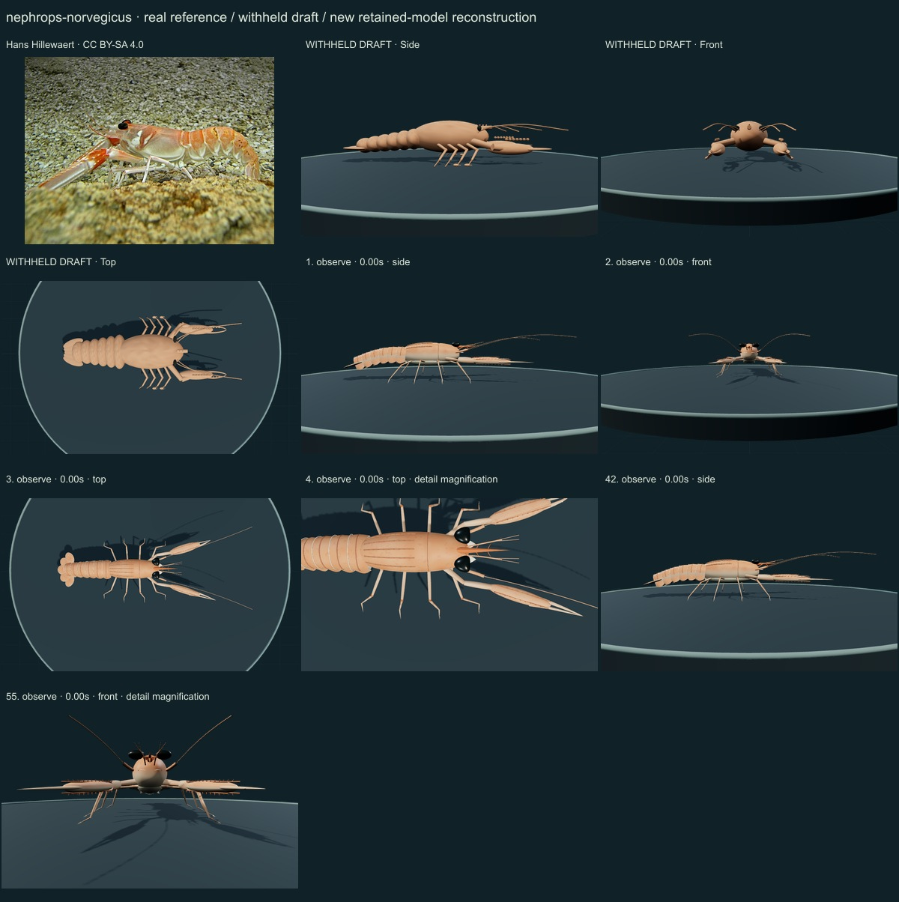
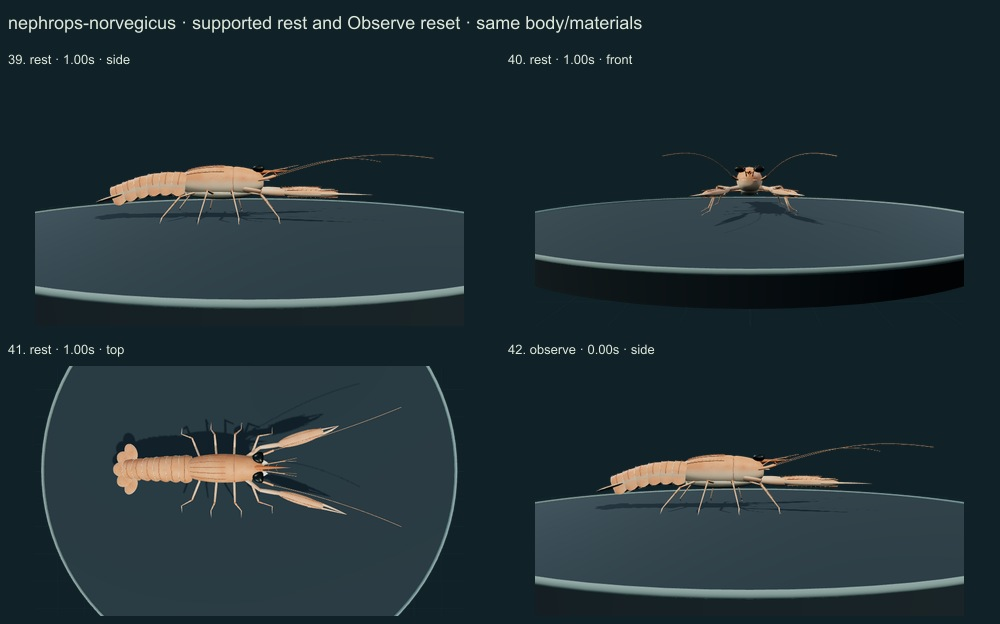
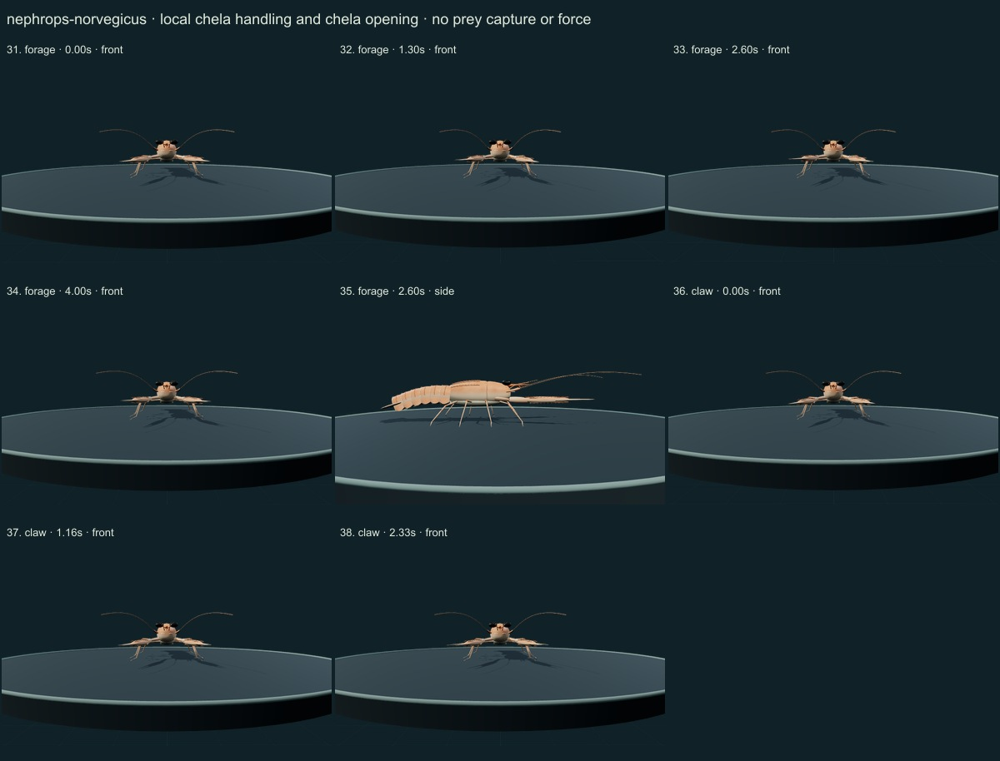
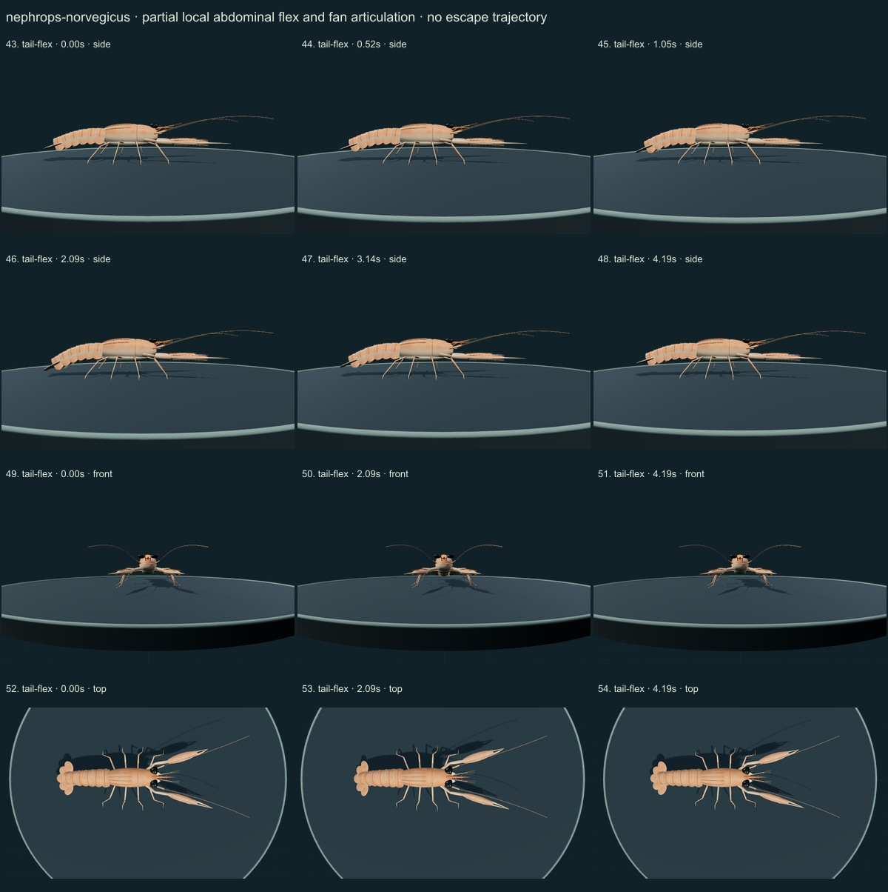
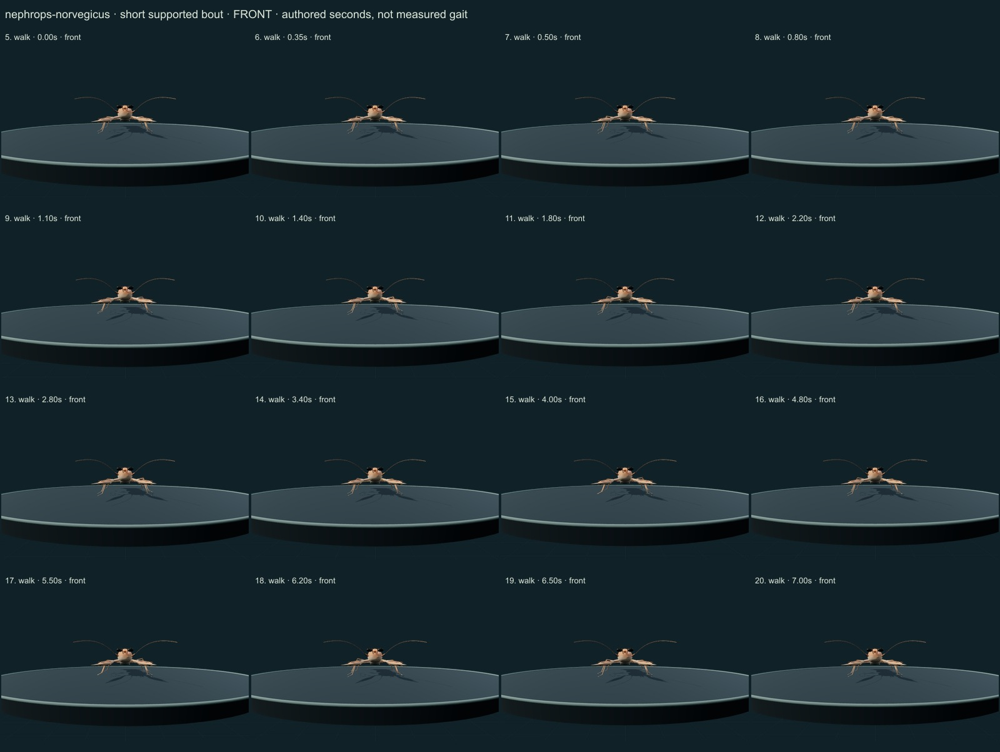
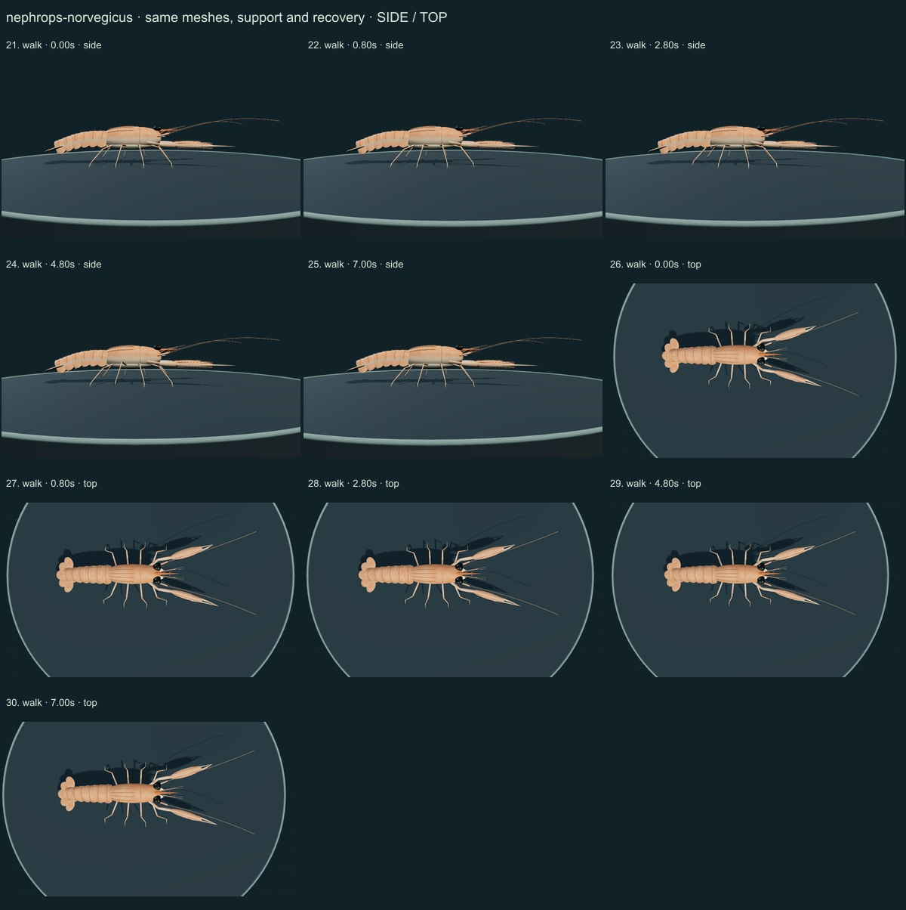

PhenoVoxel Archive · v0.6.20 · October 24, 2026
Norway lobster · individual initial correction
This three-species release reaches 265 after verified publication. 35 saved drafts remain withheld; 285 species remain to 550, including 250 without saved drafts. Release register. Fine anatomy and biological dynamics remain partial, unmeasured and independently unvalidated.
Hans Hillewaert's authentic Cretaquarium photo was viewed. Selected FAO1975 synopsis diagnosis/external morphology text and actual Figure1/PDF11, Figure2/PDF14 were compared, distinguishing adult unequal chelae from juvenile stages. Naturalis/FAO selected diagnosis was read separately. Historical taxonomy/type-locality statements are not substituted for current accepted species linkage.
Hans Hillewaert · CC BY-SA 4.0. Hans Hillewaert source labels a Norway lobster at Cretaquarium, Crete. Captive posture, illumination and selected orange/cream color do not calibrate geometry or optics; sex/age not independently established. Resized inside 1000 px, flattened and JPEG encoded; no generative alteration.
Exact source/license/download/local checksums remain in the data. Photograph identity and capture conditions are not independently re-established. Generated photographs are not used.
A slender ridged carapace, authored kidney-shaped eye ends, three lateral rostral spine pairs with a ventral tooth cue, unequal elongated ridged palms, four pairs of jointed walking limbs with small P2/P3 chelae, six sculptured abdominal plates and a separate five-part fan replace the generic lobster.
Dorsal orange and a lighter underside, longitudinal palm/carapace ridge cues, small spine rows and pale serial seam margins are original numerical cuticle surfaces. The selected captive photograph guides the orange/cream appearance without calibrating material properties.
Remaining: Fine eye contour, rostral variation, spine/denticle positions, setal density, scaphocerite shape, detailed grooves and joints remain approximate. The mild selected abdominal arch does not reproduce every captive/wild posture. First sex-modified pleopods and internal organs are incomplete; the source photo does not independently establish sex or stage.
Short authored forward support, local unequal-chela handling/opening, quiet supported posture with a mild serial abdominal arch, and partial added flex/fan articulation. No burrow digging, swimming escape, feeding, pressure/flow or physiological mechanism is simulated.
No measured coordinates, natural playback rate, joint limits, forces, fluid dynamics, muscle, food contact, ingestion, sensory physiology or independent biological validation. Fixed-length/support checks establish internal software consistency only.
55 actual final nonblank side/front/top, enlarged and action/posture states inspected individually on labelled sheets against the authentic photograph and scoped sources. Superseded frames excluded. Qualitative author assessment, not independent expert certification.






No 90% accuracy score, measured biological rate, physiological simulation or independent specialist certification is asserted. Software checks are not empirical validation. The prior 262 species objects and credited wolf/tiger behavior meshes are unchanged. Original geometry/material/controller code is MIT; real reference photos retain their individual licenses. Primary-paper figures were consulted where accessible and linked, not redistributed. Modern taxonomy is retained; Protista/Monera are legacy reporting conveniences and recorded occurrences are not native-range boundaries.
Per-frame findings, source scopes and checksums · Live model